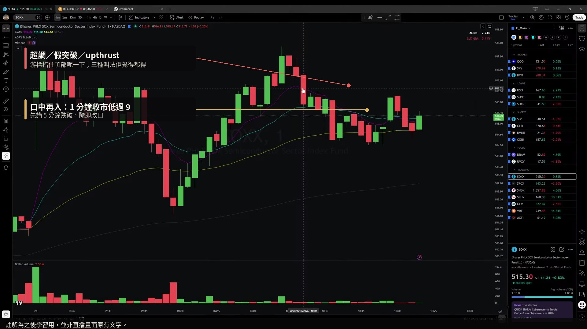
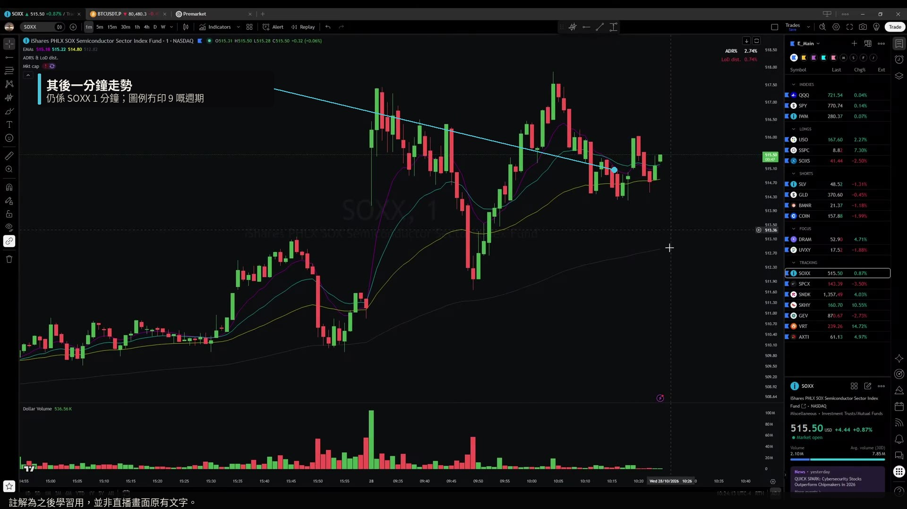

概要
同一再入場，講法改得更精準
1:02:27 有觀眾提到淡倉在低位被停、之後再入嘅困擾。佢話自己亦被停，再入係在 5 分鐘跌破；隨即改口：或者唔係，其實只係呢一下超調、假突破或者 upthrust 之後，1 分鐘收市低過 9 EMA。畫面係 SOXX 一分鐘。
圖例冇印 9 嘅週期。overshoot、fakeout、upthrust 三種叫法佢覺得都得。
圖一 · 主圖
超調之後，1 分鐘收市低過 9
直播 1:02:50

原話
I got stopped out too. But I reentered it on the 5-minute breakdown. Well, maybe not. It's just the 1-minute close below the 9 EMA. Like right after this overshoot, or like a fakeout, or like the upthrust. I don't know, whatever you call it.
我都被停。但我再入係在 5 分鐘跌破。唉，或者唔係。其實就只係 1 分鐘收市低過 9 EMA。就喺呢一下超調，或者假突破，或者 upthrust 之後。我唔知，你點叫都得。
點樣讀
值得學嘅係佢即場改口：由較粗嘅 5 分鐘跌破，改成更具體嘅 1 分鐘收市低過 9，而且發生在超調之後。
三種形態叫法並存，唔好只執其中一个名。圖例冇印 9 嘅週期。
圖二
其後一分鐘走勢
直播 1:03:10

原話
Like right after this overshoot, or like a fakeout, or like the upthrust.
就喺呢一下超調，或者假突破，或者 upthrust 之後。
點樣讀
第二幅用來對照游標離開之後嘅一分鐘結構，唔另開新結論。
畫面睇唔到再入成交價或者止蝕。
附註
注意事項
- 49:02 至約 1:02 主要係屏幕配置、流動性、止蝕距離、VCP 成交量等問答，冇獨立讀圖教學，唔單獨成科。佢說過唔會睇成交量。
- 觀眾原話有 so exist 等聽唔清之處；再入場以畫面 SOXX 同一分鐘圖為準。